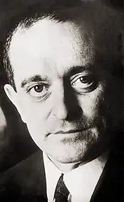

Іммануель Вайсглас народився 14 березня 1929 року в Чернівцях. Вайсглас — виходець із заможної чиновницької родини єврейського походження, шкільний товариш Пауля Целана. Уже школярем І.Вайсґлас вважався улюбленцем муз: він прекрасно грав на фортепіано, писав вірші, багато перекладав.
Ще в гімназії молодий поет опублікував в бухарестському часописі "Viaţa romanească" ( "Румунське життя") німецькі переклади кількох віршів видатного румунського поета 20 століття Тудора Арґезі. У 1940 р Видав за підтримки Арґезі свій переклад знаменитої поеми національного румунського поета Міхая Емінеску "Luceafărul" ( "Вечірня зоря") у вигляді окремої брошури.
У 1942 його разом з батьками депортували в один з "трудових" таборів Трансністрії (нині територія Вінницької області). Вайсґласам вдалося вижити, хоча вони терпіли там нелюдські приниження і знущання. Цей трагічний досвід поет згодом втілив у віршах збірки "Kariera am Bug" ( "Каменоломня над Бугом", Бухарест, 1947). Після звільнення Червоною армією в 1944 р Вайсґлас повертається до Чернівців, однак в наступному році емігрує в Бухарест. Там він працює музикантом в театрі, коректором у видавництві "Europolis", згодом редактором в газеті "Romănia Liberă" ( "Вільна Румунія"). Його друга поетична книга "Останній рубіж" (Der Nobiskrug, 1972), з'явилася тільки після перерви в чверть століття і була відзначена літературною премією румунської Спілки письменників. Основний і наскрізною темою творчості Вайсґласа стала трагедія Голокосту, яку він особисто пережив в Трансністрії. У Бухаресті Вайсґлас зробив німецькі переклади творів Александри "Князь-деспот", Василе Войкулеску "Останні вигадані сонети Шекспіра в перекладі В.Войкулеску", а також ряду віршів Міхая Емінеску. Ще більш продуктивної і багатогранною була його перекладацька діяльність з німецького на румунський. Воістину титанічним здійсненням став його переклад обох частин "Фауста" Й.В.Ґете (1957 і 1959, премія румунської Академії наук), який він опублікував під псевдонімом Іон Йордан. До творчим досягненням Вайсґласа слід віднести також переклади роману Ліона Фойхтванґера "Erfolg" ( "Успіх", 1964), оповідних творів Грильпарцер "Der arme Spielmann" ( "Бідний шпільман", 1966) і Штифтер "Granit" ( "граніт", 1964) . Над перекладами Штіфтера письменник наполегливо працював багато років, упорядкував і видав збірку його оповідань "Das alte Siegel und andere Prosa" ( "Стара друк і інша проза", 1970), підготував до друку переклад роману "Der Nachsommer" ( "Бабине літо") . В останні роки свого життя Вайсглас тяжко хворів. Поет помер 28 травня 1979 року в Бухаресті від пухлини головного мозку. Свій прах він велів розвіяти над Чорним морем. У 1994 в Аахенськом видавництві "Rimbaud" вийшла поетична книга "Aschenzeit: Gesammelte Gedichte" ( "Час попелу: Збірка віршів").